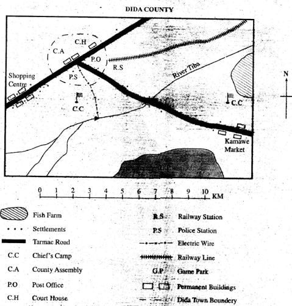
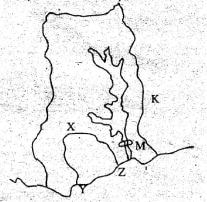
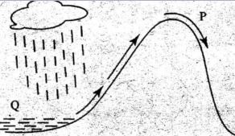
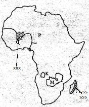
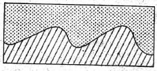
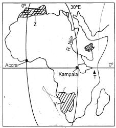

1. The lowest part of Dida county is towards
2. A thief was caught breaking a shop at the shopping centre. He should be taken to the?
3. The river project on River Tiba has been mainly developed to
4. What is the general flow of River Tiba?
5. The following services are available in Dida town EXCEPT?
6. What is the approximate length of the railway line in Dida area?
7. The settlement pattern in Dida area can be described as?
8. Which one of the following groups has communities that originated from a common place?
9. Three of the following are factors that have contributed to rapid industrialization in South Africa EXCEPT?
10. The cheapest means of transporting bulky goods over long distances on land is?
11. One of the following is NOT an effect of revolution of the earth. Which one is it?.
12. Which one of the following forests is NOT found in the highlands?
13. The highway that connects the Republic of South Africa and Egypt is?
14. The MAIN problem facing sisal farming in Tanzania is?

15. The cocoa growing areas marked X, Y, Z respectively are?
16. The neighboring country marked K is
17. Which year did the above country attain her independence?
18. Which one of the following factors has MAINLY influenced the climate along the coast of the country shown above?
19. The following are services industries EXCEPT?
20. The religious leaders who assisted the Ntemi in his duties were known as?
21. Which one of the foilowing is NOT a benefiit of forestry in Swaziland?

22. The nature of the winds marked P is that they are?
23. The MAIN economic activity on the side marked Q is?
24. Which one of the following explains why the Nile Valley is densely populated?
25. The Imperial British East Africa Company (IBEACO) collapsed in the late 1880s due to?
26. Who among the following traditional leaders of the Ababukusu led them to resist the colonialists?
27. Which one of the following tourist destinations in Africa is CORRECTLY matched with the national park found?
28. the main problem hindering the use of e-maiI as a means of communication in most part of rural Africa is?
29. Members of a county assembly in Kenya are elected by?
30. The reason why Kenya receives sunlight earlier than Senegal is because?

31. The kingdom that existed in the region marked xxx was founded by?
32. The climatic region received on the. part of the island marked sss is?
33. The plateau surface marked K is likely to be?
34. Which one of the following minerals is associated with the country marked M?
35. The following lakes were formed as a result of lava damming. Which one was not?
36. Which one of the following is the LEAST causee of road accidents in Kenya?
37. Which one of the following was NOT a method used during the struggle for independence in Ghana?
38. Atmospheric pressure is measured in units called?
39. Below are statements about the political organization of a community, in Africa during the pre-colonial period.
i) Leadership was in the hands of family heads.
ii) They practiced direct democracy.
iii) Issues affecting the community were agreed through consensus.

40. The above feature was formed through?
41. Which one of the following mountains in Africa was formed as a result of the above process?
42. Which one of the following was the MAIN reason why Lewanika collaborated with the British?
43. The following are causes of conflict in the society EXCEPT?
44. The first Chairman of the African Union was?
45. The system of administration that was used by the Belgians in Congo was?
46. In Kenya, the judiciary is headed by the?
47. Three of the following countries in Africa border the Mediterranean sea EXCEPT?

48. The diagram above shows?
49. The part marked M is known as?
50. The main foreign exchange earner in Botswana is?
51. One of the following statements does NOT explain why Samori Toure resisted the French for a long time. Which one is it?
52. Which title was given to the Nandi leader before independence in Kenya?
53. Which of the following consists of countries that are members of Common Market for Eastern and Southern Africa (COMESA)?
54. The winds responsible for causing rain in the Mediterranean climate is?
55. What age must one have attained to be issued with an identity card in Kenya?
56. Which of the following was NOT an achievement of Gamal Abdel Nasser?
57. Which of the following towns in Kenya developed as a mining centre?
58. The highest court in Kenya is?
59. The BEST way to show support for one’s country is by?
60. Which one of the following days is celebrated as the first national holiday in Kenya?
SECTION B
CHRISTIAN RELIGIOUS EDUCATION
61. According to the first account of creation (Gen l:26-28) woman was mainly created for?
62. Which one of the following was the Sign of the covenant between God and Noah, Abraham and Moses respectively?
63. When Abraham Was seventy five years, he ___
64. During the covenant making ceremony between God and the Israelites, Moses sprinkled blood to the people and the other half to the altar in order to?
65. The first four commandment guide Christians to?
66. When he was weaned, he was taken to the temple at Shiloh to be dedicated to God. His name is?
67. The spirit of the Lord left king Saul and he was tormented by an evil spirit. From this incident, Christians learn to?
68. The prophet who cursed some boys on his way to Bethel is?
69. “A voice is heard in Ramah, Rachel is weeping for her children ...” The words showed that?
70. Jesus was born in a manger. This teaches Christians
71. Who had assured Simon the prophet that he would not die before he had seen the Messiah?
72. The temptations of Jesus teach Christians all the following EXCEPT to?
73. Among the twelve disciples of Jesus, two of them were given the name Boanerges. They were?
74. Jesus showed that he was a universal savior by?
75. Jesus sent two of his disciples to get a colt for him in preparation for?
76. Jesus told the women who were weeping for him to?
77. While Jesus was on the cross, from the sixth to the ninth hour _____
78. For how many days did Jesus stay with his disciples after resurrection?
79. Believers in early church shared food mainly to show?
80. Peter raised Tabitha in
81. The disciples in early church sent Barnabas and Saul to take money to assist fellow believers during the great famine in
82. All.the following attributes were given to God in Traditional communities EXCEPT?
83. A practice that is common in both the Christianity and traditional African societies is?
84. Children in traditional African societies were taught their duties through?
85. The MAIN reasons why polygamy was allowed in tradition African communities was to?
86. The BEST way to help your classmate John who does not complete homework is to?
87. Who among the following people demonstrate tolerance?
88. We can use our leisure time to do all the following EXCEPT?
89. Your friend Joan is being persuaded to accompany a rich man for a night out in exchange of money and a mobile phone. As a Christian, you would advise her to?
90. The BEST way in which Christians can help drug addicts is by?